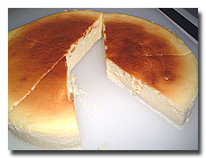
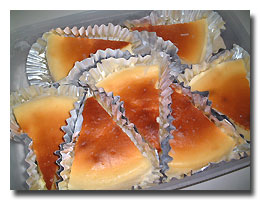

| ..*..*.. 2003年6月22日(日) 晴れ ..*..*.. 今日はチーズケーキの作り方を紹介します。冷凍保存できるので、作って冷凍庫に入れておけば急なお客さまの時でも便利ですよ。 材料（16cm丸型分)--* バター(25g) 砂糖(75g) クリームチーズ(225g) サワークリーム(100g) 卵(2) コーンスターチ(10g) バニラエッセンス(少々) 型にぬるショートニング(またはバター) 型と型の側面と底に敷く紙 事前に準備すること--* +型にショートニング(バター)をぬり、底と側面に紙を敷く +オーブンを180度にセットする +バターを室温に戻す(または、電子レンジに20秒かけてやわらかくしておく) +上記の分量を量っておく +卵(2)を割ってしっかり解きほぐしておく 作り方--* (1) ボールにバター(25g)を入れて泡立て器でよく混ぜる (2) 砂糖(75g)とクリームチーズ(225g)を２〜３回に分けて加えてさらに混ぜる (3) サワークリームの半量(50g)を加えて混ぜ、よく混ざったら残りのサワークリーム(50g)も加えて混ぜる (4) 解きほぐした卵(2)を少しずつ加え、空気を入れるようにふわっと混ぜる。底からすくうように混ぜるといい。 (5) バニラエッセンス(少々)とコンスターチ(10g)を加えて混ぜる (6) 型に生地を流し入れ、台の上に軽く打ちつけて中の空気を抜く (7) 天板にのせてオーブンに入れ、型の半分の高さまで水を注ぎ、約１時間、湯煎焼きにする ..++途中ときどき水を足す。プリンを焼くときの要領で++.. (8) 焼けたら火を止め、オーブンのドアを開けたままにしてゆっくり冷ます (9) 粗熱がとれたら室温に出し、冷めたら型からはずす ..++急激に冷ますと表面が沈むので注意++..  出来上がったら写真のように8つに切り分け、市販のアルミホイルで区切りをつけると、お店で売ってるケーキみたいに見えます。 写真のようにタッパーに入れて、ラップをかぶせて冷凍します。食べる30分くらい前に冷凍庫から出します。 夕食を食べはじめる前に出しておけばデザートにちょうど解凍されてます。お友達が遊びにきたときに出しておけば、ちょっとおしゃべりしてる間に解凍されて食べごろに。人の家を訪問するときの手みやげにもどうぞ。 2,3か月は冷凍しておいて大丈夫です。 +レシピは、出どころを記載していない場合は、主に複数のお料理の本やお料理のサイトから集めたものを、自分の作りやすい分量と方法に書き換えたものを載せています+ |